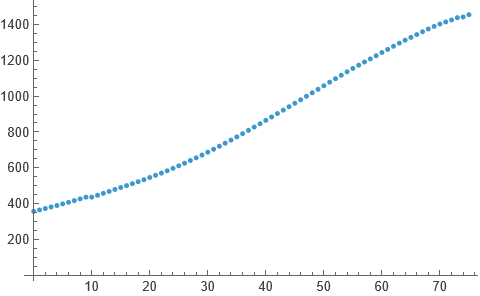
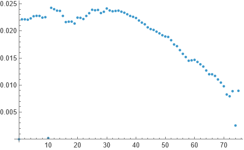
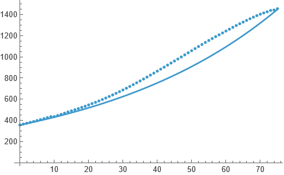
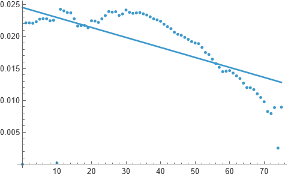
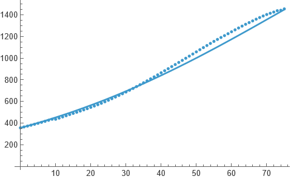
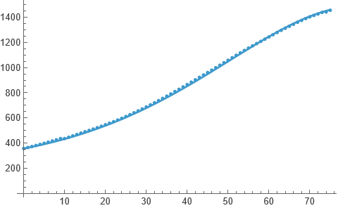

Population growth
24 February, 2026
Population growth models are one of the most basic mathematical models and are often used to introduce the subject of modelling to newcomers. In this post I will present an introductory discussion on these models using real life dataset. I consider the Indian population during 1950–2025. I will be using Mathematica. First off, I show the data:
india = TimeSeries@N@Transpose[{{1, 0}, {0, 10^-6}} .
Transpose[Import[NotebookDirectory[] <> "../data/ipop.csv", "CSV"]] - {1950, 0}]
(* scaling and translating the data *);
p0 = india[0];
ListPlot[india]
We will start with an exponential growth model: p′(t) = rp(t), p(t0) = p0. r here is the constant growth rate, which we can take to be the average of yearly growth of the population.
gr = TimeSeries[Transpose[{
india["Times"],
{0} ~ Join ~ (Differences[india["Values"]]/india["Values"][[;;-2]])}]];
ListPlot[gr]
Average of these values comes out to be 0.018672 and so we set r to be that. Solving the above differential equation we get p(t) = 357.021e0.018672t, which is then compared with the data below:
r[1] = gr["Values"] // Mean // N;
s[1][t_] = DSolveValue[{p'[t] == r[1] p[t], p[0] == p0}, p[t], t];
Show[
ListPlot[india],
Plot[s[1][t], {t, 0, 75}]]
This is good but not the best we’ll be having today. Notice that r here is supposed to be constant, whereas that is not the case in general. The growth rates shown above were not constant, hence we can try to fit a time dependent function to the growth rate data:
r[2]= NonlinearModelFit[gr["Path"], a0 + a1t, {a0, a1}, t];
Show[
ListPlot[gr],
Plot[r[2][t], {t, 0, 75}]]
Now we can use this linear function in r(t) in lieu of the constant r used above:
s[2][t_] = DSolveValue[{p'[t] == r[2] [t] p[t], p[0] == p0}, p[t], t];
Show[
ListPlot[india],
Plot[s[2][t], {t, 0, 75}]]
This is clearly far better than the previous fit! However, notice that the growth rate does not really look like a linear curve rather a quadratic curve. And therefore:
r[3] = NonlinearModelFit[gr["Path"], a0 + a1 t + a2 t^2, {a0, a1, a2}, t];
s[3][t_] = DSolveValue[{p'[t] == r[3][t] p[t], p[0] == p0}, p[t], t];
Show[
ListPlot[india],
Plot[s[3][t], {t, 0, 75}]]
Amazing! In the next post, I will be continuing this and discussing the logistics growth model using all three growth rates: constant, linear, and quadratic.
Thanks for reading. Return to see all blog posts, or to the home page.